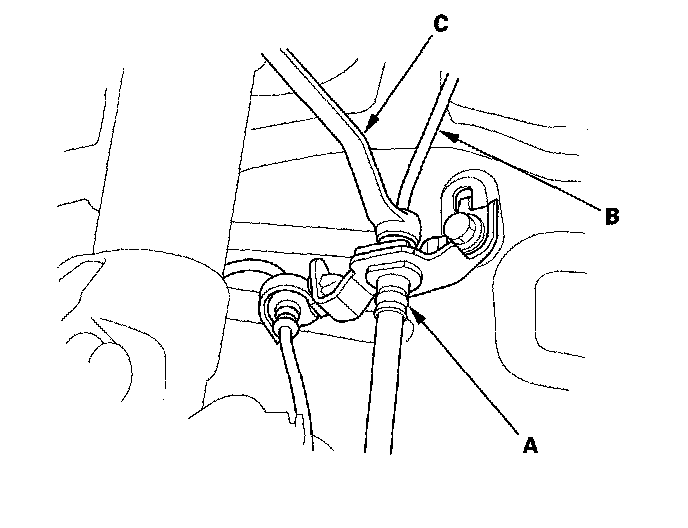
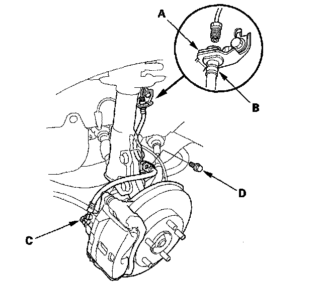
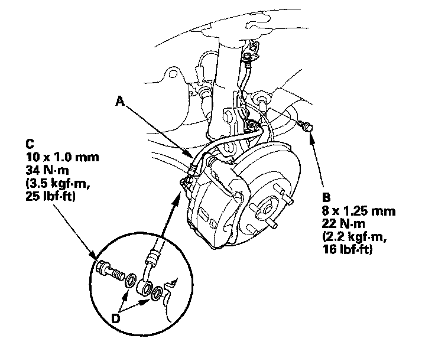
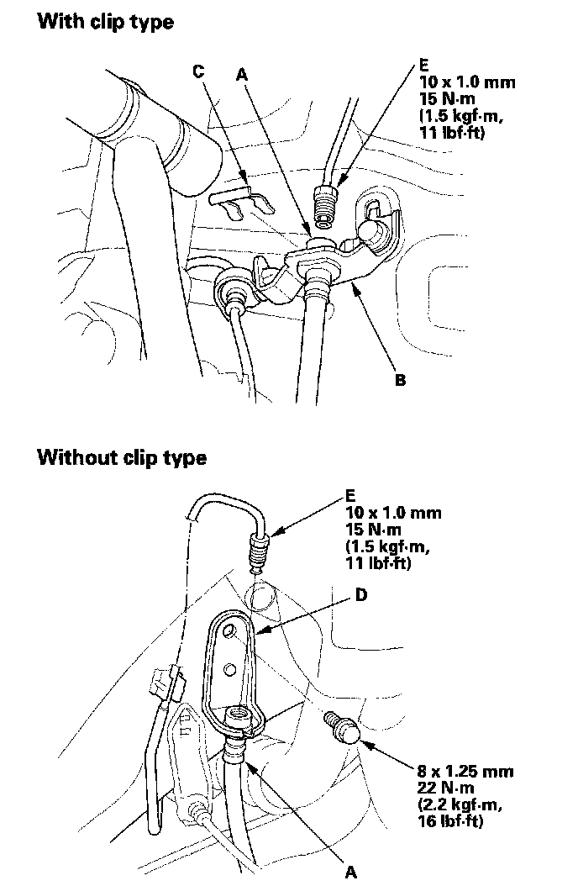

Brake Hose/Line: Service and Repair
Brake Hose ReplacementNOTE:
^ Before reassembling, check that all parts are free of dirt and other foreign particles.
^ Replace parts with new ones whenever specified to do so.
^ Do not spill brake fluid on the vehicle; it may damage the paint; if brake fluid gets on the paint, wash it off immediately with water.
^ To prevent the brake fluid from flowing, plug and cover the hose ends and joints with a shop towel or equivalent material.
^ The illustrations show only the front of the vehicle except where the procedure is different for the rear.
Removal
1. Disconnect the brake hose (A) from the brake line (B) using a 10 mm flare-nut wrench (C).

2. With clip type: Remove and discard the brake hose clip (A) from the brake hose (B).

3. Disc brake type : Remove the banjo bolt (C), and disconnect the brake hose from the caliper.
4. Remove the brake hose mounting bolt(s) (D), then remove the brake hose.
NOTE: Without clip type: Remove the brake hose with the bracket.
Installation
1. Install the brake hose (A) with the mounting bolt (B).

2. Disc brake type: Connect the brake hose to the caliper with the banjo bolt (C) and new sealing washers (D).
3. Position the brake hose ends (A).
NOTE:
^ With clip type: Install the brake hose on the brake hose bracket (B) with a new brake hose clip (C).
^ Without clip type: Install the brake hose bracket (D) to the frame.

4. Connect the brake line (E) to the brake hose.
5. After installing the brake hose, bleed the brake system.
6. Do the following check:
^ Check the brake hose and line joint for leaks, and tighten if necessary.
^ Check the brake hoses for interference and twisting.